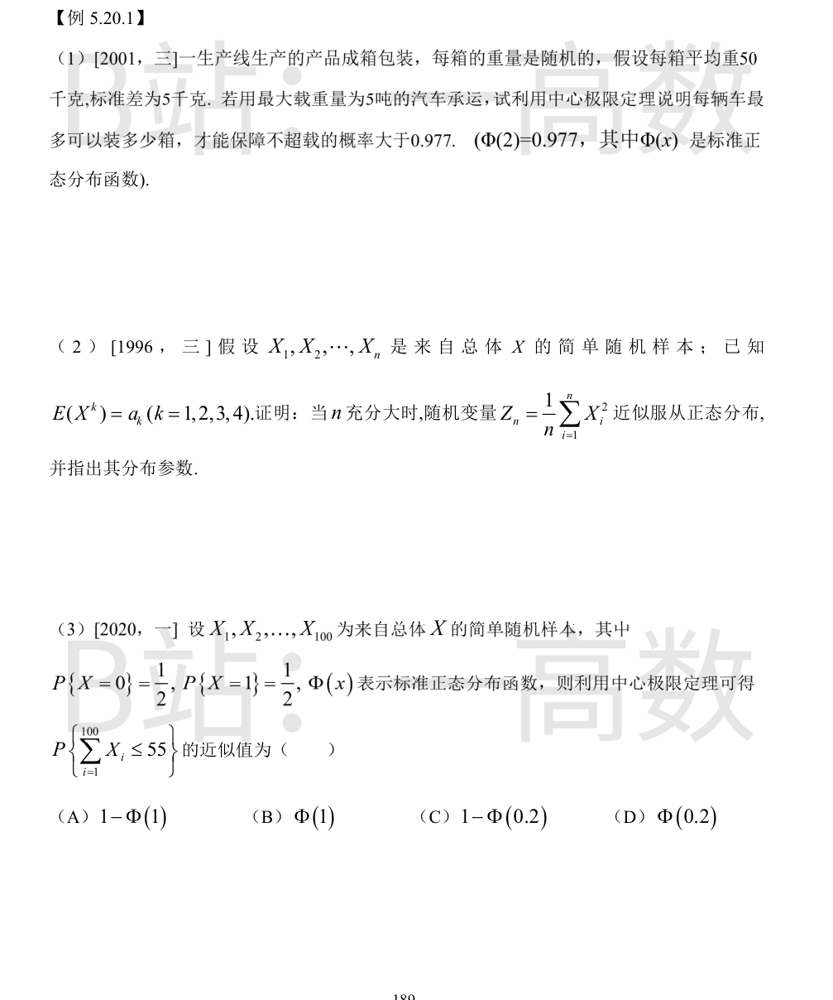
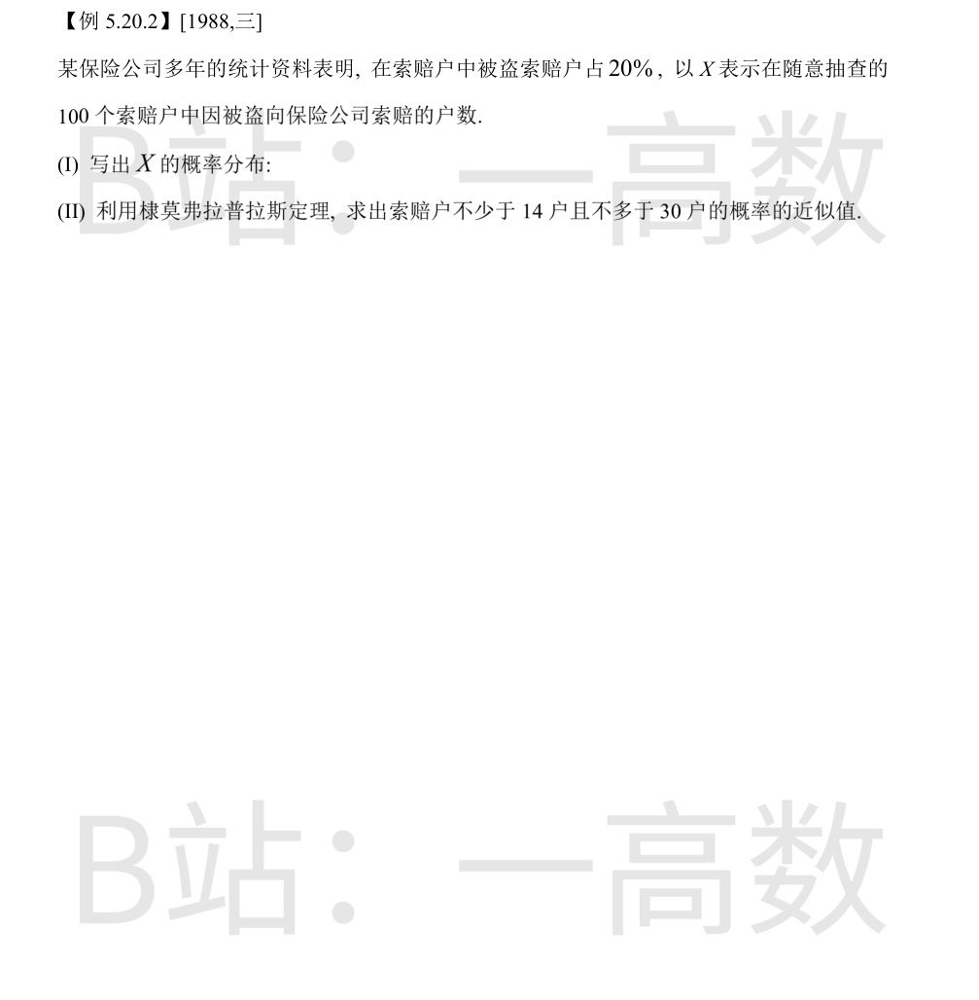

设第 i 箱重量为 X_i，E(X_i)=50，D(X_i)=25。装 n 箱时总重 $\sum_{i=1}^n X_i$ 近似 $N(50n,\,25n)$。
不超载即总重 ≤ 5000 千克，要求
$$P\left\{\sum_{i=1}^n X_i\le 5000\right\}=\Phi\left(\frac{5000-50n}{5\sqrt{n}}\right)>\Phi(2).$$
等价于 $\dfrac{5000-50n}{5\sqrt{n}}\ge 2$，即 $50n+10\sqrt{n}\le 5000$。
令 $t=\sqrt{n}$：$5t^2+t-500\le 0$，解得 $t\le \dfrac{-1+\sqrt{10001}}{10}\approx 9.9005$，故 $n\le t^2\approx 98.02$，即 n 最大取 **98**。
每辆车最多装 98 箱。
令 $Y_i=X_i^2\ (i=1,2,\dots,n)$，则 $Y_1,\dots,Y_n$ 独立同分布，且
$$E(Y_i)=E(X_i^2)=a_2,\qquad D(Y_i)=E(X_i^4)-\left[E(X_i^2)\right]^2=a_4-a_2^2.$$
由独立同分布（林德伯格–列维）中心极限定理，n 充分大时
$$\frac{\sum_{i=1}^n Y_i - n a_2}{\sqrt{n}\,\sqrt{a_4-a_2^2}} \ \xrightarrow{\text{近似}}\ N(0,1).$$
而 $Z_n=\dfrac{1}{n}\sum_{i=1}^n Y_i$，故 $Z_n$ 近似服从正态分布，其参数为
$$\text{均值 } a_2,\qquad \text{方差 } \frac{a_4-a_2^2}{n},\quad \text{即 } Z_n \approx N\left(a_2,\,\frac{a_4-a_2^2}{n}\right).$$
ΣX_i ~ B(100, 1/2)，E(ΣX_i)=50，D(ΣX_i)=25，标准差为 5。
由棣莫弗–拉普拉斯中心极限定理
$$P\left\{\sum_{i=1}^{100}X_i\le 55\right\}\approx \Phi\left(\frac{55-50}{5}\right)=\Phi(1).$$
选 (B)。

每户是否为被盗索赔户可视为伯努利试验，p=0.2；抽查 100 户即 100 重伯努利试验。
故 X ~ B(100, 0.2)：
$$P\{X=k\}=\binom{100}{k}(0.2)^k(0.8)^{100-k},\qquad k=0,1,2,\dots,100.$$
np=100×0.2=20，$np(1-p)=100×0.2×0.8=16$，标准差为 4。由棣莫弗–拉普拉斯中心极限定理，$\dfrac{X-20}{4}$ 近似 N(0,1)。
$$P\{14\le X\le 30\}=\Phi\left(\frac{30-20}{4}\right)-\Phi\left(\frac{14-20}{4}\right)=\Phi(2.5)-\Phi(-1.5).$$
由 $\Phi(-1.5)=1-\Phi(1.5)$：
$$P\{14\le X\le 30\}\approx \Phi(2.5)+\Phi(1.5)-1\approx 0.9938+0.9332-1=0.927.$$
即所求概率近似值为 0.927。